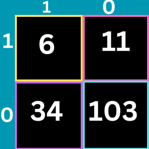

1. A technique that converts words into vectors is called------ ?
2. You need to ensure that the model meets the Microsoft transparency principle for responsible AI.What should you do?
3. You are designing an AI system that empowers everyone, including people who have hearing, visual, and other impairments.This is an example of which Microsoft guiding principle for responsible AI?
4.Provide consumer with information and control over collection use and storage of their data.
5.Which type of machine learning should you use to predict the number of pencil that will be sold next month??
6.What is the main purpose of word embading?
7.An AI solution that is offered in different prices different sales territories is an example of microsoft inclusiveness principle?
8. Which Two statement Wrong about automated machine learning?
9.Which layer in transformer used to show output?
10 you trained regression model using unlabeled data?

Predict the correctly negative?
12: Predict the False positive?
13: Predict the true positive?
14: Predict the false negative?
15.Who is this person in this group of people?
16.What is a use case for classification?
17. In which two scenarios can you use speech recognition? Each correct answer presents a complete solution.
18. Aliya switch on the bulb recognize intent?
19.You have a frequently asked questions (FAQ) PDF file. You need to create a conversational support system based on the FAQ. Which service should you use?
20:You are authoring a Language Understanding (LUIS) application to support a music festival. You want users to be able to ask questions about scheduled shows, such as: `Which act is playing on the main stage?`The question `Which act is playing on the main stage?` is an example of which type of element?